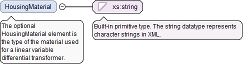
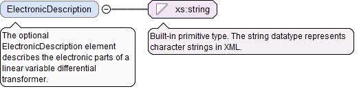

<xs:element name="TypeOfLinearVariableDifferentialTransformer" type="LinearVariableDifferentialTransformerEnumType" minOccurs="0"><xs:annotation><xs:documentation>The optional TypeOfLinearVariableDifferentialTransformer element is the type of Linear Variable Differential Transformer (LVDT) sensor.</xs:documentation></xs:annotation></xs:element>
<xs:element name="MinMeasuringDistance" type="LinearValueType" minOccurs="0"><xs:annotation><xs:documentation>The optional MinMeasuringDistance element is the minimum measuring distance.</xs:documentation></xs:annotation></xs:element>
<xs:element name="MaxMeasuringDistance" type="LinearValueType" minOccurs="0"><xs:annotation><xs:documentation>The optional MaxMeasuringDistance element is the maximum measuring distance.</xs:documentation></xs:annotation></xs:element>
The (required) UnitName attribute is the unit name for the UserDefinedUnitValueType.
Source
<xs:element name="TemperatureStability" type="UserDefinedUnitValueType" minOccurs="0"><xs:annotation><xs:documentation>The optional TemperatureStability element is the temperature stability of the sensor.</xs:documentation></xs:annotation></xs:element>
The (required) UnitName attribute is the unit name for the UserDefinedUnitValueType.
Source
<xs:element name="ExcitationFrequency" type="UserDefinedUnitValueType" minOccurs="0"><xs:annotation><xs:documentation>The optional ExcitationFrequency element is the input frequency for a linear variable differential transformer sensor.</xs:documentation></xs:annotation></xs:element>
The (required) UnitName attribute is the unit name for the UserDefinedUnitValueType.
Source
<xs:element name="ExcitationAmplitude" type="UserDefinedUnitValueType" minOccurs="0"><xs:annotation><xs:documentation>The optional ExcitationAmplitude element is the amplitude of excitation in a linear variable differential transformer sensor.</xs:documentation></xs:annotation></xs:element>
<xs:element name="Diameter" type="LinearValueType" minOccurs="0"><xs:annotation><xs:documentation>The optional Diameter element is the diameter of the rod connected to displacing part.</xs:documentation></xs:annotation></xs:element>
The (required) UnitName attribute is the unit name for the UserDefinedUnitValueType.
Source
<xs:element name="ShockTolerance" type="UserDefinedUnitValueType" minOccurs="0"><xs:annotation><xs:documentation>The optional ShockTolerance element is the level shock tolerance for a linear variable differential transformer.</xs:documentation></xs:annotation></xs:element>
The (required) UnitName attribute is the unit name for the UserDefinedUnitValueType.
Source
<xs:element name="VibrationTolerance" type="UserDefinedUnitValueType" minOccurs="0"><xs:annotation><xs:documentation>The optional VibrationTolerance element is the level of vibration tolerance for a linear variable differential transformer.</xs:documentation></xs:annotation></xs:element>
The optional HousingMaterial element is the type of the material used for a linear variable differential transformer.
Diagram

Type
xs:string
Properties
content
simple
minOccurs
0
Source
<xs:element name="HousingMaterial" type="xs:string" minOccurs="0"><xs:annotation><xs:documentation>The optional HousingMaterial element is the type of the material used for a linear variable differential transformer.</xs:documentation></xs:annotation></xs:element>
The optional ElectronicDescription element describes the electronic parts of a linear variable differential transformer.
Diagram

Type
xs:string
Properties
content
simple
minOccurs
0
Source
<xs:element name="ElectronicDescription" type="xs:string" minOccurs="0"><xs:annotation><xs:documentation>The optional ElectronicDescription element describes the electronic parts of a linear variable differential transformer.</xs:documentation></xs:annotation></xs:element>
The required id attribute is the QIF id of the measurement resource, used for referencing.
Source
<xs:complexType name="LinearVariableDifferentialTransformerSensorType"><xs:annotation><xs:documentation>The LinearVariableDifferentialTransformerSensorType defines a Linear Variable Differential Transformer (LVDT) sensor.</xs:documentation></xs:annotation><xs:complexContent><xs:extension base="DetachableSensorBaseType"><xs:sequence><xs:element name="TypeOfLinearVariableDifferentialTransformer" type="LinearVariableDifferentialTransformerEnumType" minOccurs="0"><xs:annotation><xs:documentation>The optional TypeOfLinearVariableDifferentialTransformer element is the type of Linear Variable Differential Transformer (LVDT) sensor.</xs:documentation></xs:annotation></xs:element><xs:element name="MinMeasuringDistance" type="LinearValueType" minOccurs="0"><xs:annotation><xs:documentation>The optional MinMeasuringDistance element is the minimum measuring distance.</xs:documentation></xs:annotation></xs:element><xs:element name="MaxMeasuringDistance" type="LinearValueType" minOccurs="0"><xs:annotation><xs:documentation>The optional MaxMeasuringDistance element is the maximum measuring distance.</xs:documentation></xs:annotation></xs:element><xs:element name="TemperatureStability" type="UserDefinedUnitValueType" minOccurs="0"><xs:annotation><xs:documentation>The optional TemperatureStability element is the temperature stability of the sensor.</xs:documentation></xs:annotation></xs:element><xs:element name="ExcitationFrequency" type="UserDefinedUnitValueType" minOccurs="0"><xs:annotation><xs:documentation>The optional ExcitationFrequency element is the input frequency for a linear variable differential transformer sensor.</xs:documentation></xs:annotation></xs:element><xs:element name="ExcitationAmplitude" type="UserDefinedUnitValueType" minOccurs="0"><xs:annotation><xs:documentation>The optional ExcitationAmplitude element is the amplitude of excitation in a linear variable differential transformer sensor.</xs:documentation></xs:annotation></xs:element><xs:element name="Diameter" type="LinearValueType" minOccurs="0"><xs:annotation><xs:documentation>The optional Diameter element is the diameter of the rod connected to displacing part.</xs:documentation></xs:annotation></xs:element><xs:element name="ShockTolerance" type="UserDefinedUnitValueType" minOccurs="0"><xs:annotation><xs:documentation>The optional ShockTolerance element is the level shock tolerance for a linear variable differential transformer.</xs:documentation></xs:annotation></xs:element><xs:element name="VibrationTolerance" type="UserDefinedUnitValueType" minOccurs="0"><xs:annotation><xs:documentation>The optional VibrationTolerance element is the level of vibration tolerance for a linear variable differential transformer.</xs:documentation></xs:annotation></xs:element><xs:element name="HousingMaterial" type="xs:string" minOccurs="0"><xs:annotation><xs:documentation>The optional HousingMaterial element is the type of the material used for a linear variable differential transformer.</xs:documentation></xs:annotation></xs:element><xs:element name="ElectronicDescription" type="xs:string" minOccurs="0"><xs:annotation><xs:documentation>The optional ElectronicDescription element describes the electronic parts of a linear variable differential transformer.</xs:documentation></xs:annotation></xs:element></xs:sequence></xs:extension></xs:complexContent></xs:complexType>